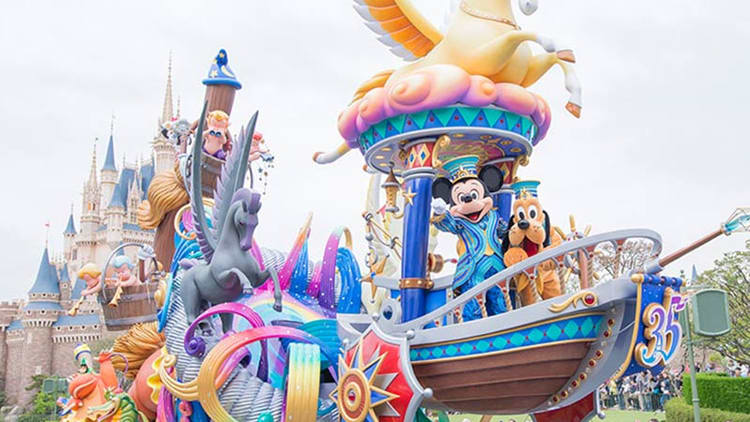

1 / 3

東京迪士尼
2 / 3

東京迪士尼
3 / 3
東京迪士尼
官方網站：//www.tokyodisneyresort.jp/tc/tdl/
東京迪士尼度假區包含東京迪士尼樂園、東京迪士尼海洋、5家迪士尼飯店、伊克斯皮兒莉購物中心、餐飲及娛樂設施。整個區域佔地達201公頃，由「迪士尼度假區線」環繞着，本篇介紹的就是位於「東京迪士尼樂園站」的東京迪士尼樂園。東京迪士尼樂園是個不分國籍、男女老少都能盡情歡樂享受的夢之國度。樂園設計以灰姑娘城堡為中心，並以冒險、夢幻、未來等七大主題所構成的夢想魔法王國。是美國之外的第一座迪士尼樂園。
若你以順時針方向於樂園中移動，西部樂園會是你於探險樂園後造訪的園區，該樂園仿造美國西部建築。迪士尼幻想工程師與日本東方土地公司原定在設計此園區時，將以迪士尼樂園中的邊域世界Frontierland作為設計來源且命名於此，但”Frontier”一詞無法像中文一樣翻譯成”邊域”完美保留原文含意，於是就決定翻譯成西部樂園了!
夢幻樂園位於東京迪士尼樂園中心，樂園最具標誌性的建築灰姑娘城堡也為於此，還有一些不可缺少的經典設施，如小飛俠天空之旅、小小世界、小飛象和小熊維尼密獵記，這裡同時也是能找到野獸和公主貝拉之城堡奇緣落座處。